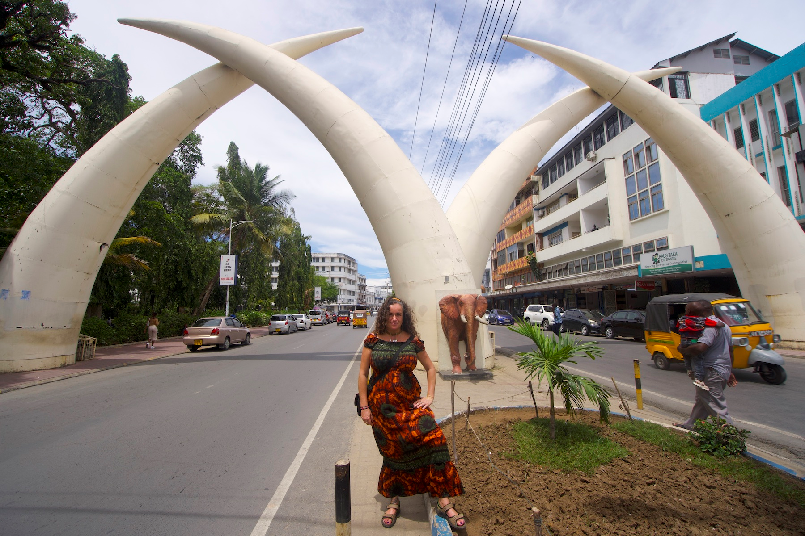
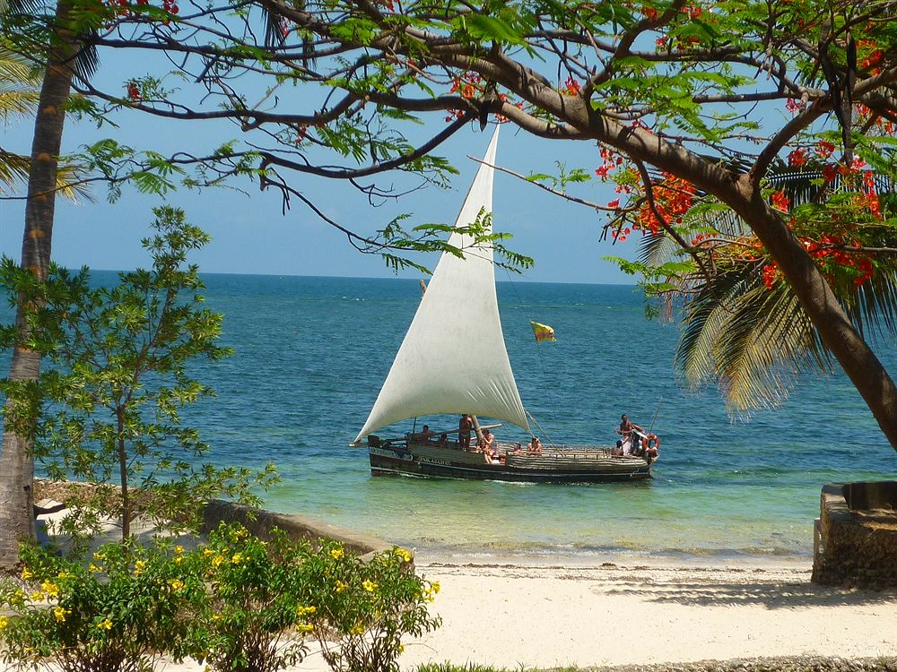
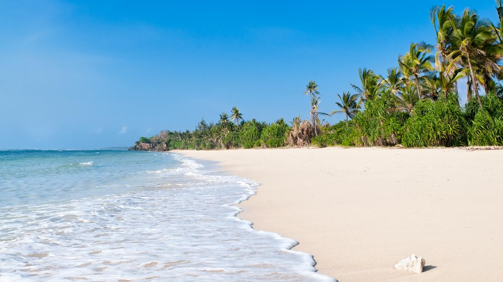

Kilifi
Malindi
Mombasa is a coastal city in Kenya, filled with amazing visiting areas such as tourist hotels, beaches, and national parks. Travelling with Bynix Tours will give you an amazing experience to visit Fort Jesus, Halla Park, Mamba Village, Mama Ngina Waterfront, and several beaches.
Malindi is a town on Malindi Bay, in southeastern Kenya. It sits amid a string of tropical beaches dotted with hotels and resorts. Malindi Marine National Park and nearby Watamu Marine National Park are home to turtles and colorful fish. Arabuko-Sokoke Forest Reserve harbors elephants and more than 200 species of birds. Near the forest, the Gede Ruins are the remains of an ancient Swahili town.
Diani is a beach located to 30Km to the south of coastal region. Based on reserch, it is the most visited beach resort in Kenya because of its amazing white sands and lush greener.
